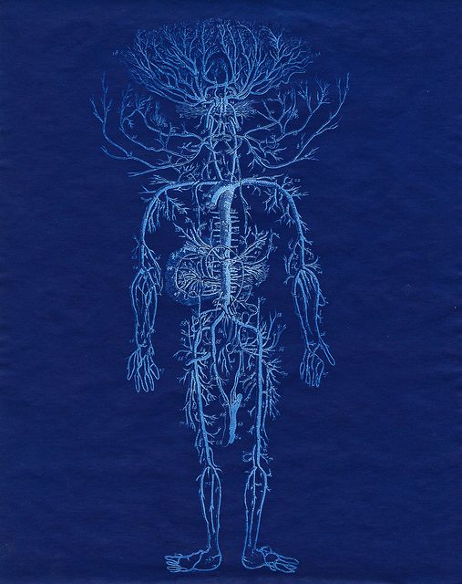

A funding layer below
traditional grants
Primordia gives builder-led biotech the smallest credible path from idea to experiment: fast, lightweight, trust-based microgrants paired with community-lab infrastructure and serious scientific review.
Early research results are stories
Community labs, DIY-bio clubs, and biohacker spaces let people do real biology without waiting for supervisors, university positions, or big grants — turning curiosity into concrete experiments in months, not years.
Beyond access to equipment, they help builders create a proof of concept and a public narrative for their work.
That story is what makes funders and stakeholders listen closely, and gives builders a chance at future support.

PL.014 · REG 2208Community bio can breed success at venture scale
A community space gives a small team room to run, that work attracts capital, and the founders end up follow-on funded, hired, or published.
Muse Bio
Started during a hackathon co-hosted by a community lab. Now commercialising menstrual stem cells with a venture round behind it.
Zeon Systems
Filmed their YC launch video at the Biopunk Lab, leading directly into a Y Combinator batch and a follow-on round.
Opentrons
Made lab automation accessible by turning liquid-handling robots into an affordable, open-source benchtop platform. After YC, scaled into a unicorn.
Primordia funds many small beginnings
Per microgrant. Covers months of membership, reagents, and materials — enough to enable a minimal viable experiment.
No strings attached. The work and its learnings belong to the builder.
Primordia keeps only 5% as overhead, covering digital service fees.
A focused, minimal viable biology experiment — the first decisive test.
Where Primordia is going
Run 6+ cohorts, fund 20–30 microgrants · launch community-lab partner & alumni programs · reach $5,000+ monthly recurring with 200+ donors.
Target 8+ cohorts, funding 26–40 microgrants annually · establish Primordia as the primary community-bio experiment funder · reach $10,000+ monthly recurring with 400+ donors.
A cross-collab between ValleyDAO & Biopunk Lab
Albert Anis
Co-lead on Primordia. Coordinates donor onboarding, banking, and program operations.
Morgan Richards
Leads program design and reviewer coordination across cohorts and grant cycles.
Elliot Roth
Founder of Biopunk. Brings the community-lab network and technical mentorship layer.
Zoe Isabel Senón
Program lead for grantee experience, onboarding, office hours, and visibility.
We are grateful to everyone who supported Primordia before it had a track record. In particular, we thank the Kris Rockwell Foundation for its early support. Read the full message from the team.